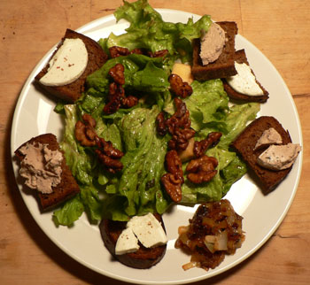

Goat cheese salad
The only salad I want to eat regularly is my own. When I’m in a salad phase, I make virtually the same salad every night. It’s a combination of my mom’s, Ted’s, and various other good salads I’ve eaten in my life. Tarbes salad has all of my favorite flavors in it, it’s evidently kosher, and frankly it’s the best salad in the world. Part of its greatness is that it can be so easily and successfully modified. It can be an after-dinner treat, or it can be dinner. I don’t think this is true of most salads. In fact, I tend to agree with Jeffrey Steingarten, who famously described salad as a “silent killer.”
It’s not necessarily healthy to shovel leafy greens and cherry tomatoes in your face every night, every morsel doused in some ridiculous earth mother dressing, and it’s certainly no fun. I never take from the salad bar at lunch. People in line tell me I should get my greens, and I’m thinking, there is no way I’m going to eat anything from that depressing array of raw vegetables. I watch them building a mountain of completely unappetizing salad fixins, which they’ll pedantically consume before their mountain of whatever else is on offer, and I feel so lucky that I don’t fall for it, and that I’ll enjoy my hot lunch and be satisfied.
I have trouble veering from my regular salad path, and I still have yet to try something completely new. But I made a valiant effort tonight, building a salad out of ingredients I hadn’t previously used.

I used regular green leaf lettuce and my usual dressing, but I toasted squares of day-old pumpernickel bread and adorned them with fresh crottin and truffled pâté from d’Artagnan. Instead of mixing in onions with the greens, I cooked them extra long, added butter and apple liqueur, and turned them into a chutney, which I served on the side, since I knew we’d be craving something soft. I took Emily’s suggestion and candied a handful of walnuts, flavoring them with salt and cayenne pepper. Finally, I threw in a chopped Pink Lady apple and some pine nuts.
Sometimes I love having dinners like this one, when the plate is full of different things to play with and eat. There are things to spread, things to cut, things to combine. It makes for reverent and hushed eating.
Salad season is upon us. I hope everyone has their salad spinner dusted off and ready for action!
Comments
‘Reverent and hushed eating’? We’re talking about a salad here, not a spiritual experience! While it does sound mouth-watering…
Good crottin and pâté demand reverence.
looks delicious
What is in your regular salad? And do you use bottled dressing? I love adding new things too… a pungent blue cheese, craisens, toasted walnuts. Sometimes we vary the vingarette we make by using balsamic instead of red wine vinegar or adding a teaspoon of raspberry preserves and making a raspberry vinegarette. We have salad almost every night. Do you find cherry tomatoes very tasty? I think they’re a little overrated.
I don’t bother with cherry tomatoes. I use toasted walnuts, a caramelized onion, blue cheese or roquefort if I can get it, and a sliced orange or pear. I always make the same vinaigrette with olive oil, balsamic vinegar, mustard, salt, and pepper (mom’s recipe essentially, but she likes white balsamic vinegar).
Hi Kid, Your salad looks divine! We have spinach and lettuce coming up in my little garden, from last year! As well as some new sprouts. I guess the winter wasn’t cold enough to kill all the greens.
In any case, I wish you the best of luck tomorrow evening when you do your video show!! I will be plugging for you. Love and hugs, Grandma
Add a comment